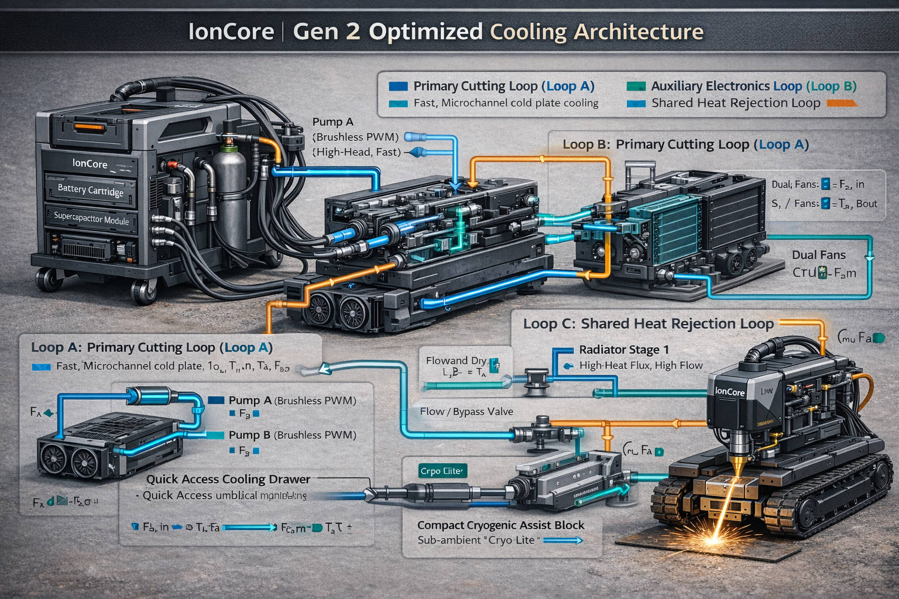
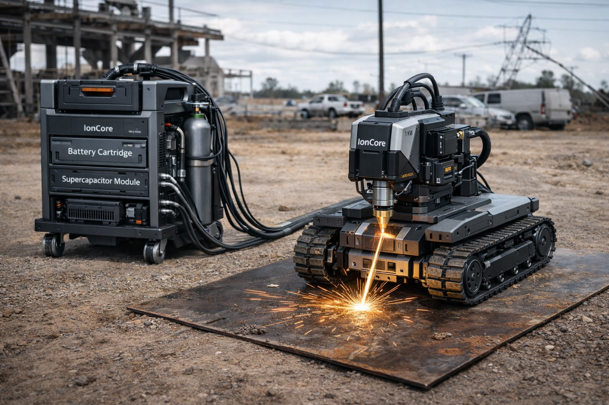

IONCORE Field-Deployable Direct-Energy Systems
Mobile 1 kW Fiber Laser Cutting — Built for Field Work
IonCore FiberCut 1k combines a stabilized 48 V power module, liquid thermal management, and a compact tracked motion platform carrying an autofocus cutting head. Heavy power and cooling stay offboard; the tracker stays light, stable, and precise. Designed for consistent kerf and reliable cutting on thin-gauge steel and stainless.
IonCore FiberCut Visuals
Updated with the latest IonCore laser media assets.


Cutting Capabilities (Typical)
| Material | Recommended Assist Gas | Typical Clean Cut Range | Notes |
|---|---|---|---|
| Mild Steel | O₂ | 1–3 mm | Higher speed possible with oxygen; oxidation edge may occur depending on settings. |
| Stainless Steel | N₂ | 1–3 mm | Nitrogen supports cleaner edge and reduced oxidation; flow stability is important. |
| Aluminum | N₂ | 1–2 mm | Reflectivity/back-reflection management required; conservative ramping recommended. |
Performance Controls That Keep Cuts Consistent
- Energy-per-mm coupling: laser power scales with commanded speed; emission pauses on speed error.
- Dual-stage height management: Z-axis maintains standoff; autofocus maintains spot size.
- Window cleanliness protection: contamination monitoring triggers derate → purge → resume.
- Bus stability under transients: supercaps supply burst current to reduce droop and ripple.
Key System Specifications
| Category | Specification | Why it matters |
|---|---|---|
| DC Bus | 48 V nominal (42–58.8 V) | Maintains compatibility across modules and supports high current with manageable insulation and weight. |
| Energy Storage | 1.2–1.8 kWh LFP, hot-swappable magazines | Field uptime via cartridge swaps; LFP chemistry improves thermal robustness. |
| Supercap Buffer | ~100 F @ 48 V nominal | Fast transient response; reduces battery stress and improves cut stability during motion events. |
| Cooling | 1.5–2.5 L/min liquid loop; radiator sized ~1.2 kW | Stabilizes optics and electronics temperature to reduce focus drift and protect components. |
| Motion | Tracked base; 20–250 mm/s closed-loop | Stable feed rate reduces kerf variation; traction supports dusty or uneven surfaces. |
| Z + Autofocus | 30–60 mm Z travel; ±10 mm autofocus | Maintains standoff and focus on warped sheet or imperfect surfaces. |
| Assist Gas | O₂ / N₂ / Ar; 0.3–1.5 bar regulated | Controls oxidation, edge quality, and dross removal depending on material. |
Specifications shown are for the standard 1 kW cutting configuration and represent realistic engineering targets for a mobile platform. Site conditions and material selection affect results.
Module Architecture (What Ships as Separate Units)
- FiberCut Head (300): collimator (310), autofocus (320), window (330), nozzle (340), sensor suite (350).
- Power Cartridge (100): battery magazines (104), precharge (140), contactor (130), telemetry (150), supercaps (160).
- Thermal Module (200): primary loop (210), HX/radiator (212), secondary loop (214), (optional) dew controller (240).
- Mobile Tracker: tracked drive, encoders, IMU, Z lift, motion controller, head mount isolation.
- Umbilical: fiber, power, coolant supply/return, assist gas line, CAN/Ethernet communications.
Why Offboard Power + Cooling
- Reduces tracker mass to improve stability and path accuracy.
- Moves heat rejection away from the cutting head for better thermal control.
- Enables hot-swappable energy cartridges without stopping the tracker workflow.
- Improves serviceability: modules can be replaced independently in the field.
Included Control Logic (High Level)
- Safety interlocks: E-stop, keyed enable, cartridge seated, coolant flow, tilt/IMU, window transmission, standoff.
- Cut gating: emission only when speed and standoff are within limits.
- Bus sag response: supercap assist → duty reduction → alarm → graceful stop if persistent.
- Contamination recovery: derate → purge → confirm transmission > Tmin → resume.
- Assist gas control: material-specific presets with pressure monitoring and valve response control.
Parts List (High-Level BOM)
This is a realistic high-level bill of materials for the standard 1 kW cutting configuration. Exact vendor part numbers vary by region and compliance requirements.
| Module | Major Subassemblies | Key Notes | Service Items |
|---|---|---|---|
| FiberCut Head (300) | Collimator (310), autofocus stage (320) with encoder, focus lens set, protective window (330), coaxial nozzle (340), back-reflection photodiode, optional kerf camera, local I/O board. | Autofocus travel ±10 mm; standoff managed by tracker Z + focus loop; contamination monitoring supports derate/purge flow. | Nozzle tips, protective window cassette, purge filters/seals. |
| Power Cartridge (100) | LFP battery magazines (104), BMS + telemetry (150), precharge (140), main contactor (130), DC bus bars, current sensor, interlock seat switch, supercap module (160). | 48 V bus; supercaps supply burst current to reduce droop under cutting transients; hot-swap supported via precharge + interlock logic. | Battery magazines, fuses, contactor, precharge resistor/relay. |
| Thermal Module (200) | Pump (primary loop 210), reservoir/degas, radiator/HX (212), fan set, flow/pressure sensors, temperature sensors, coolant quick-disconnect bulkhead. | 1.5–2.5 L/min primary flow; radiator capacity sized for ~1.2 kW heat rejection; alarms gate laser on flow loss. | Coolant filter, pump, fans, QD seals, coolant. |
| Assist Gas Package | Cylinder mount, primary regulator, secondary precision regulator, solenoid/proportional valve, line pressure sensor, quick-connect to umbilical. | O₂ for mild steel speed; N₂ for stainless/aluminum edge quality; 0.3–1.5 bar regulated at delivery line (config-dependent). | Regulator seals, valve, filters. |
| Umbilical | Fiber delivery line, DC power conductors, coolant supply/return lines, assist gas line, CAN/Ethernet comms, strain relief + bend radius control. | Designed to keep the tracker light and stable; dry-break coolant QDs recommended; fiber bend radius protection critical. | QD seals, strain relief, protective sheath. |
| Mobile Tracker | Tracked chassis, drive motors + gear reduction, encoders, IMU, Z lift (30–60 mm), standoff sensor (ToF/triangulation), motion controller + drivers, head mount isolation. | Closed-loop feed rate 20–250 mm/s; emission gated by speed/standoff/tilt; stable motion reduces kerf variation. | Tracks, bearings, Z actuator, sensors. |
For compliance (laser safety, CE/UL as applicable), the final BOM typically includes certified interlock components, protective housings, labels, and test fixtures.
Configuration Options
What You Select at Order Time
- Material presets priority (steel vs stainless vs aluminum focus)
- Assist gas setup (O₂ kit, N₂ kit, or dual-gas manifold)
- Umbilical length (short shop vs extended field)
- Tracker base (tracked standard; wheeled for clean floors)
- Battery capacity (1.2 kWh vs 1.8 kWh)
Safety & Interlocks (Industrial-Grade)
Laser emission is only permitted when the system is in a verified-safe state.
- E-stop chain: hard disable of emission and contactor logic.
- Keyed enable: prevents unauthorized activation.
- Cartridge seat interlock: inhibits contactor closure unless fully seated.
- Coolant flow gate: emission inhibited below minimum flow threshold.
- Tilt/IMU gate: inhibits emission if platform exceeds safe pitch/roll.
- Standoff gate: inhibits emission if height is outside permitted band.
- Window transmission gate: derate/purge/recover workflow; shuts down if below Tmin.
- Bus sag handling: supercap assist → duty reduction → alarm → graceful stop.
Always follow applicable laser safety standards and local regulations. Final product classification and required PPE depend on enclosure, safeguards, and operating procedures.